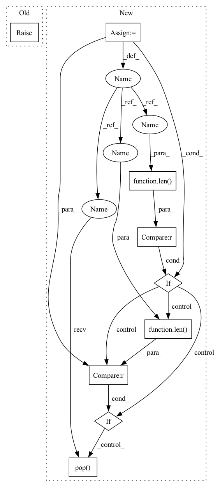

Pattern ID :13740

Before Change
modes = attr.strings
for mode in modes:
if (not mode == b"BRANCH_LEQ") and (not mode == b"LEAF"):
raise AssertionError("Modality {} not supported".format(mode))
is_decision_tree = post_transform == "NONE"
After Change
raise AssertionError("Post transform {} not supported".format(post_transform))
elif attr.name == "nodes_modes":
modes = attr.strings
unique_modes = set(modes)
unique_modes.discard(b"LEAF")
if len(unique_modes) > 1:
raise AssertionError("Mixed Comparison Modalities are not supported: {}".format(unique_modes))
elif len(unique_modes) != 0:
decision_cond_map = {
b"BRANCH_LEQ": "<=",
b"BRANCH_LT": "<",
b"BRANCH_GTE": ">=",
b"BRANCH_GT": ">",
b"BRANCH_EQ": "=",
b"BRANCH_NEQ": "!=",
}
decision_cond = decision_cond_map[unique_modes.pop()]
is_decision_tree = post_transform == "NONE"
In pattern: SUPERPATTERN
Frequency: 3
Non-data size: 9
Instances
Fragment ID: 45948124
Project Name: microsoft/hummingbird
Commit Name: 2b712a30de5470fb1c5973298af1bbf39f001b74
Time: 2022-09-11
Author: 47496212+grafail@users.noreply.github.com
File Name: hummingbird/ml/operator_converters/onnx/tree_ensemble.py
M Class Name: AnonimousClass
N Class Name: AnonimousClass
M Method Name: _get_tree_infos_from_onnx_ml_operator(1)
N Method Name: _get_tree_infos_from_onnx_ml_operator(1)
M Parent Class:
N Parent Class:
M File Name: hummingbird/ml/operator_converters/onnx/tree_ensemble.py
N File Name: hummingbird/ml/operator_converters/onnx/tree_ensemble.py
M Start Line: 23
M End Line: 168
N Start Line: 23
N End Line: 180
'>
Before Change
raise NotImplementedError
def truncate_seq(self, first_seq, second_seq=None, maxlen=None):
raise NotImplementedError
def token_to_id(self, token):
raise NotImplementedError
After Change
def truncate_seq(self, first_seq, second_seq=None, maxlen=None, pop_index=-1):
按 maxlen 截断两个序列，策略是优先从较长的一个中 pop.(pop_index)
if second_seq is None:
second_seq = []
while True:
total_length = len(first_seq) + len(second_seq)
if total_length <= maxlen:
break
elif len(first_seq) > len(second_seq):
first_seq.pop(pop_index)
else:
second_seq.pop(pop_index)
return first_seq, second_seq
def token_to_id(self, token):
'>
Fragment ID: 45948126
Project Name: xv44586/toolkit4nlp
Commit Name: 0bf79d28404d2804b16e8ed743858fb121d49f20
Time: 2020-07-18
Author: xv44586@163.com
File Name: toolkit4nlp/tokenizers.py
M Class Name: BasicTokenizer
N Class Name: BasicTokenizer
M Method Name: truncate_seq(5)
N Method Name: truncate_seq(4)
M Parent Class: object
N Parent Class: object
M File Name: toolkit4nlp/tokenizers.py
N File Name: toolkit4nlp/tokenizers.py
M Start Line: 165
M End Line: 165
N Start Line: 212
N End Line: 225
'>
Before Change
raise NotImplementedError
def truncate_seq(self, first_seq, second_seq=None, maxlen=None):
raise NotImplementedError
def token_to_id(self, token):
raise NotImplementedError
After Change
def truncate_seq(self, first_seq, second_seq=None, maxlen=None, pop_index=-1):
按 maxlen 截断两个序列，策略是优先从较长的一个中 pop.(pop_index)
if second_seq is None:
second_seq = []
while True:
total_length = len(first_seq) + len(second_seq)
if total_length <= maxlen:
break
elif len(first_seq) > len(second_seq):
first_seq.pop(pop_index)
else:
second_seq.pop(pop_index)
return first_seq, second_seq
def token_to_id(self, token):
'>
Fragment ID: 45948121
Project Name: xv44586/toolkit4nlp
Commit Name: be67410e44e5fa777976bec4d242af8411a31adf
Time: 2020-07-18
Author: xv44586@163.com
File Name: toolkit4nlp/tokenizers.py
M Class Name: BasicTokenizer
N Class Name: BasicTokenizer
M Method Name: truncate_seq(5)
N Method Name: truncate_seq(4)
M Parent Class: object
N Parent Class: object
M File Name: toolkit4nlp/tokenizers.py
N File Name: toolkit4nlp/tokenizers.py
M Start Line: 165
M End Line: 165
N Start Line: 212
N End Line: 225